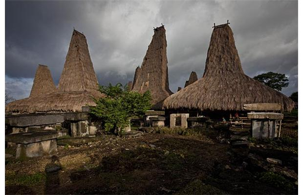

East Sumba Tourism
Welcome to East Sumba
Culture, Cultural Tourism, Nature Tourism, & Tourism Events Travel Enjoy the Beauty of Nature Join With Us Tourism in East Sumba.
Pariwisata di Sumba Timur mempunyai prospek yang baik dan masih dapat dikembangkan secara lebih optimal. Daerah ini memiliki obyek wisata yang beragam, baik wisata alam, agrowisata, maupun wisata budaya. Wisata alam di daerah ini antara lain berupa keindahan laut dan pegunungan yang terbentang luas, sungai-sungai, wisata hutan tropis yang lebat, dengan keanekaragaman jenis flora dan fauna liar, seperti yang terdapat di kawasan Taman Nasional Laiwangi Wanggameti. Wisata budaya di Sumba Timur meliputi peninggalan sejarah dan keanekaragaman tradisi, kesenian lokal/setempat yang spesifik serta menarik.
Dengan potensi wisata seperti itu, sektor pariwisata di Sumba Timur tergolong primadona dalam menghasilkan devisa negara. Selain itu, sektor ini diharapkan dapat berperan sebagai sarana yang dapat meningkatkan perekonomian rakyat dan dapat menyerap tenaga kerja sebanyak-banyaknya. Persyaratan utama yang dibutuhkan adalah keamanan dan ketenangan politik. Kedua hal itu sangat diharapkan oleh para wisatawan asing yang akan berkunjung ke Indonesia, khususnya Sumba Timur. Jumlah wisatawan yang berkunjung ke Sumba Timur pada tahun 2004 tercatat sebanyak 4.227 orang dan sedikit menurun pada tahun 2005 yakni sebanyak 3.529 orang, dan kembali mengalami kenaikan pada tahun 2006 sebesar 5.228 orang.